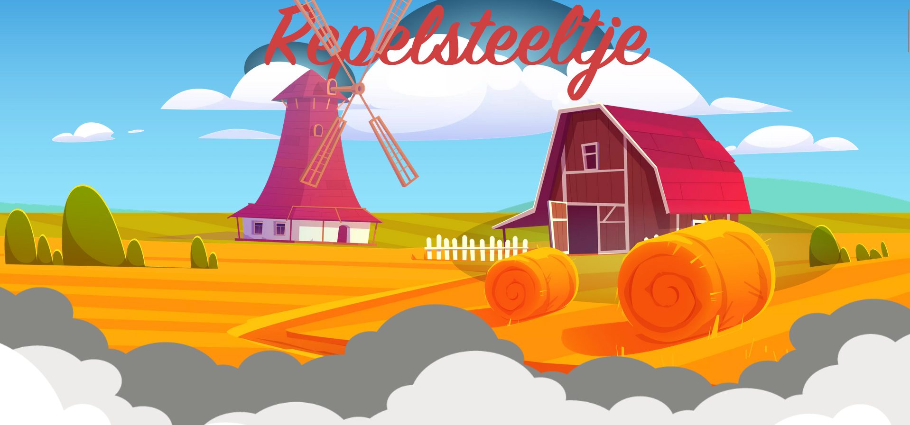
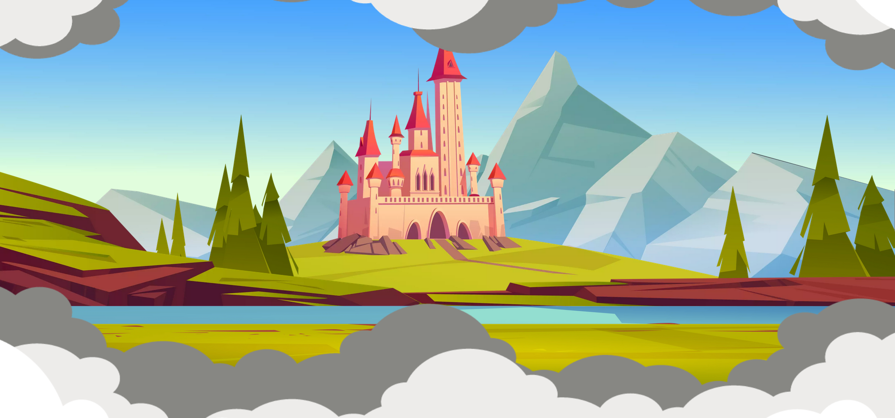
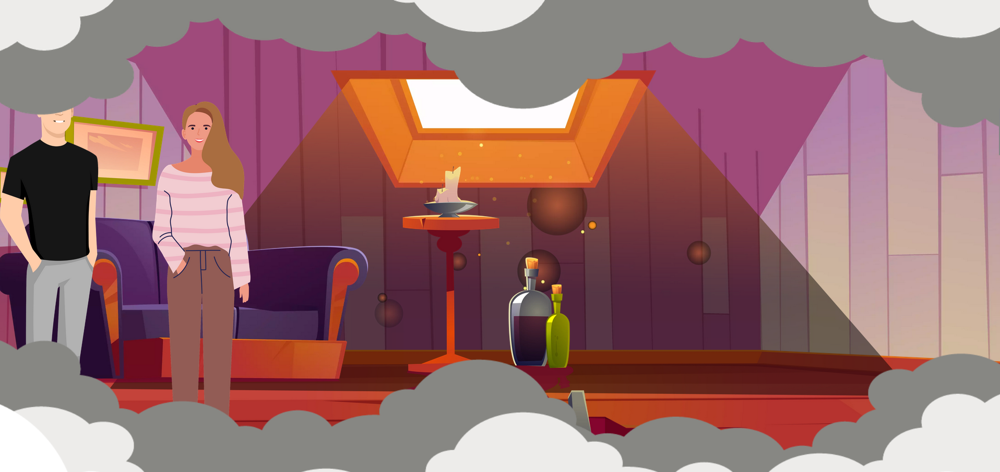

- Sprookje -
mijn contributie:
- BACKEND - FRONTEND - DESIGN - ANIMATIONS -
Over
Het project
Voor dit schoolproject moest ik een sprookjeswebsite maken, waarbij ik koos voor het verhaal van Repelsteeltje. Het verhaal moest verteld worden met behulp van parallax-effecten in React, waardoor de website een dynamisch en visueel aantrekkelijke ervaring biedt.
De vectoren die in dit project zijn gebruikt, komen van Vecteezy en zijn niet door mijzelf ontworpen. Dit project is een verdere uitwerking van mijn Portaalpagina (in portfolio), waarbij alle sprookjes samen kwamen.
Gebruikte technologiën
React - Javascript - node.js
Media

Eerste parralax effect.

Tweede parralax effect.

Derde parralax effect.
Meer
Mijn aanpak
Ik begon met het kiezen van de belangrijkste scènes uit het verhaal van Repelsteeltje en besloot om parallax-effecten te gebruiken voor een dynamische presentatie. Na het verzamelen van de benodigde vectoren, zette ik het project op in React en implementeerde de parallax-effecten om de afbeeldingen te laten bewegen tijdens het scrollen. Het design werd verzorgd met CSS voor een visueel aantrekkelijke ervaring.